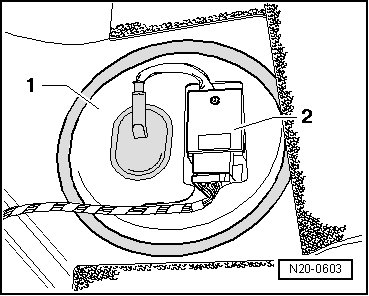
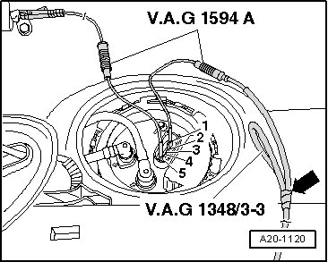
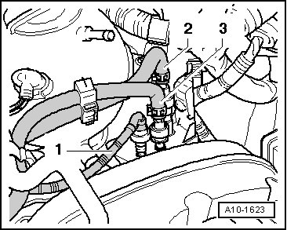
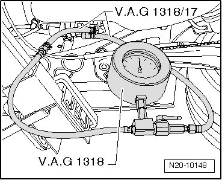
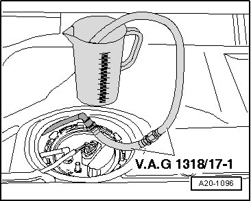
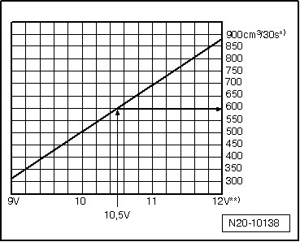
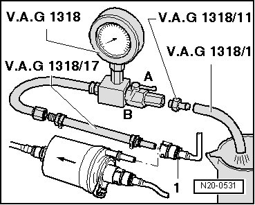

Fuel Delivery, Checking
Diagnostic Procedures
Fuel Delivery, Checking
Special tools, testers and auxiliary items required
• Hand held remote control (jumper).
• Multimeter.
• Electrical connector test lead set.
• Fuel pressure test set (high pressure).
• Measuring container, fuel-resistant.
Test conditions
• Battery voltage 12.5 V
• Fuel filter OK
• Fuel tank at least 1/4 filled.
• Fuel pressure regulator OK.
• Ignition switched off.
CAUTION!
Fuel supply line is under pressure! Wear protective goggles and protective clothing to prevent injuries and contact with skin. Before loosening hose connections, place rags around the connection point. Then release pressure by carefully pulling on hose.
Procedure
- Remove fuel filler cap from fuel filler tube.
- Remove the rear seat bench.
- Remove the cover - 1 - with Fuel Pump (FP) Control Module (J538) - 2 - from the fuel pump.

- Connect a Hand held remote control (jumper) to terminal - 1 - of the fuel delivery unit and to vehicle battery (+).
- Connect a jumper cable from a Electrical connector test lead set to terminal - 5 - of the fuel delivery unit and to vehicle Ground (GND).

CAUTION!
Fuel supply line is under pressure! Wear protective goggles and protective clothing to prevent injuries and contact with skin. Before loosening hose connections, place rags around the connection point. Then release pressure by carefully pulling on hose.
- Disconnect the fuel supply line - 2 - and catch escaping fuel using a rag.

• Press in securing ring to disengage the fuel lines.
- Connect a High pressure fuel gauge between the fuel filter and fuel supply line.

- Connect a fuel line from the high pressure fuel gauge to the disconnected fuel return line and hold it in the measuring container.

CAUTION!
Danger of spraying when opening shut-off valve; wear protective goggles and protective clothing to prevent injuries and contact with skin. Hold container in front of open connection of pressure measuring device.
- Close the shut-off valve of High pressure fuel gauge.
- Press switch on the Hand held remote control (jumper) while opening the shut-off valve slowly until 4 bar positive pressure is indicated on pressure gauge. Do not change position of the shut-off valve.
- Empty into the measuring container.
Delivery rate of the fuel pump is dependent on the battery voltage.
- Operate the remote control for 30 seconds.
- Using a Multimeter, check battery voltage while the fuel pump is running.
- Compare the fuel quantity pumped with the specified value.

*) Minimum delivery rate cm3/30 s
**) Voltage at the fuel pump with the engine off and the fuel pump running (approx. 2 V less than battery voltage).
Read-out example:
During test, a voltage of 12.5 V is measured at battery. Since voltage at the pump is approx. 2 V less than battery voltage, there is a minimum delivery rate of approx. 580 cm3/30 s.
If the minimum delivery rate is not obtained:
- Check fuel lines for restrictions (kinks) or clogging.
If no malfunction can be found:
- Disconnect the supply hose - 1 - from the fuel filter input.

- Connect a High pressure fuel gauge between the fuel filter and fuel supply line.
- Repeat the delivery rate test.
If the minimum delivery rate is obtained:
- Replace the fuel filter.
If the minimum delivery rate is not obtained:
- Remove the fuel pump and check the strainer filter for dirt.
If no malfunctions have been found:
- Replace the fuel pump.
Final Procedures
After the repair work, the following work steps must be performed in the following sequence:
1. Check the DTC memory. Refer to --> [ Diagnostic Mode 03 - Read DTC Memory ] Diagnostic Modes 01 - 09.
2. If necessary, erase the DTC memory. Refer to --> [ Diagnostic Mode 04 - Erase DTC Memory ] Diagnostic Modes 01 - 09.
3. If the DTC memory was erased, generate readiness code. Refer to --> [ Readiness Code ] Monitors, Trips, Drive Cycles and Readiness Codes.